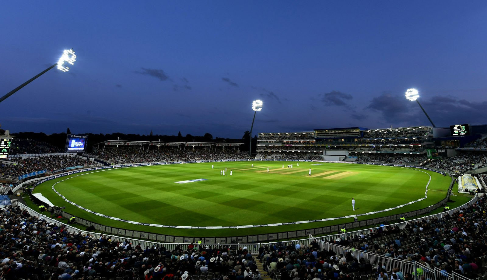
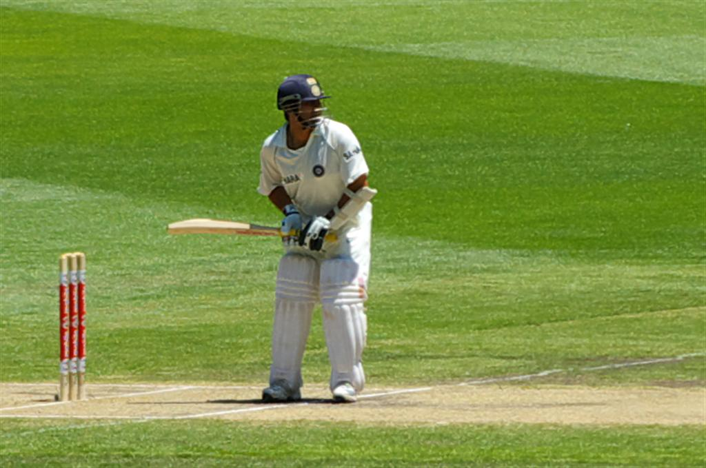
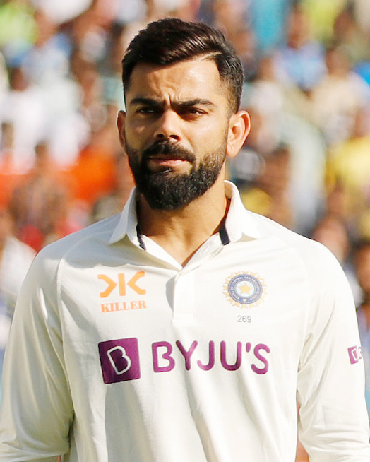
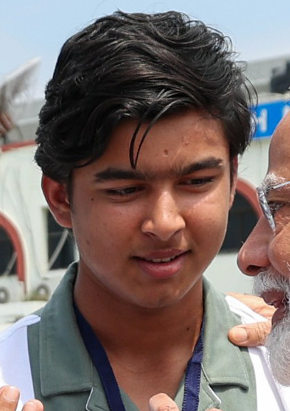

🏏 TOP 10 BATTERS UNDER PRESSURE
Selected on Unstop submission dropdowns | Evaluated on pure run velocity, dot suppression, chase finishes, and wicket security.


In high-stakes T20 cricket, reputations frequently obscure real execution under crisis. A batter can accumulate hollow runs during low-leverage middle overs, and a bowler can pad economy numbers against lower-order tailenders in dead rubbers. The Rajasthan Royals Analytics Think-Tank framework isolates players whose performance surges when single deliveries swing match victory probability.
We did not rely on subjective reputation or raw aggregate averages. Every single ranking is the output of a 5-stage quantitative pipeline isolating high-leverage execution from statistical noise across 200,999 deliveries.
Full ball-by-ball telemetry ingested across 883 matches (IPL & T20I, 2022–2026). Each record holds the instantaneous game state: $\{RunsNeeded, BallsLeft, WicketsInHand, RRR, Phase\}$.
Engine 1: Logistic regression models $P(\text{Win})$ to isolate deliveries with Leverage Index $LI_t \ge 1.25$.
Engine 2: Contextual crisis rules: RRR ≥ 9.5 (overs 11–20), death overs 16–20, collapse recovery (≤15/3), super overs.
To prevent small-sample anomalies from inflating rankings, strict minimums were applied: ≥ 150 pressure balls for batters; ≥ 180 pressure balls (30 overs) for bowlers. Filtered strictly to the 477 registered IPL player pool matching Unstop dropdowns.
Metrics are normalized into standardized Z-scores $Z(X) = \frac{X - \mu}{\sigma}$ to compare disparate dimensions (strike rates, dot rates, chase wins, death wickets) on an identical baseline.
Odd vs. Even matches benchmarked across all qualified players. Statistically validates individual clutch traits ($r = 0.382, p < 10^{-8}$) over random variance.
Calculates the maximum win-probability swing possible on ball $t$ across all possible outcomes $\Omega = \{\text{Dot}, \text{Single}, \text{Four}, \text{Six}, \text{Wicket}\}$, normalized by the average swing per ball in T20 matches. Deliveries with $LI_t \ge 1.25$ define the top 30% volatility events where matches are won or lost.
Balances raw scoring volume ($20\%$) and strike-rate velocity under pressure ($20\%$) while severely penalizing dot balls ($20\%$). Heavily rewards finishers remaining not out in successful chases ($15\%$) and penalizes wicket-throwing via log-scaled Balls Per Dismissal ($10\%$).
Constructs an equilibrium between defensive run containment ($20\%$ dot suppression & $-20\%$ economy penalty) and lethal strike-point breakthroughs: overs 16–20 death dismissals ($20\%$), breaking established 30+ momentum partnerships ($20\%$), and converting high-leverage spells into match victories ($20\%$).
Selected on Unstop submission dropdowns | Evaluated on pure run velocity, dot suppression, chase finishes, and wicket security.
Side-by-side technical telemetry formatted to match the official Unstop submission dropdown selections.
| Rank | Player Name | Style | Role Archetype | Pressure Balls | Pressure Runs | Pressure SR | Death SR (16–20) | Dot % | Boundary % | Chase Finishes | Balls / Dismissal |
|---|---|---|---|---|---|---|---|---|---|---|---|
| #01 |  Tim David Tim David |
RHB | Death Power Hitter / Finisher | 828 | 1,503 | 181.52 | 199.81 | 30.4% | 25.7% | 15 | 16.9 |
| #02 | Namboori Tilak Varma | LHB | Crisis Finisher / Chase Master | 1,465 | 2,190 | 149.49 | 191.88 | 30.4% | 18.8% | 21 (Most in IPL) | 27.1 |
| #03 |  Virat Kohli |
RHB | Master Anchor / Chase Specialist | 896 | 1,413 | 157.70 | 186.53 | 27.7% | 21.5% | 9 | 27.2 (Wicket Anchor) |
| #04 | Rajat Patidar | RHB | Middle-to-Death Spin Enforcer | 461 | 739 | 160.30 | 217.00 (Elite) | 32.5% | 22.3% | 1 | 17.1 |
| #05 |  Heinrich Klaasen Heinrich Klaasen |
RHB | Zero-Dot Spin Demolisher | 864 | 1,500 | 173.61 | 198.97 | 25.3% (Elite) | 23.0% | 5 | 20.6 |
| #06 |  Tristan Stubbs Tristan Stubbs |
RHB | 360° Strike Rotator & Closer | 709 | 1,168 | 164.74 | 196.16 | 24.1% (Lowest) | 21.2% | 10 | 23.6 |
| #07 |  Vaibhav Sooryavanshi |
LHB | Generational Boundary Disruptor | 232 | 530 | 228.45 (Highest) | 290.00 | 35.8% | 38.8% (Highest) | 0 | 29.0 |
| #08 | Nicholas Pooran | LHB | Explosive Left-Handed Finisher | 1,010 | 1,672 | 165.54 | 190.07 | 33.9% | 23.5% | 12 | 21.0 |
| #09 |  David Miller David Miller |
LHB | Veteran Closer / Ice-Man | 901 | 1,421 | 157.71 | 174.07 | 28.3% | 20.3% | 15 | 21.5 |
| #10 |  Suryakumar Yadav Suryakumar Yadav |
RHB | 360° Match Winner / Enforcer | 1,301 | 2,289 (Most) | 175.94 | 217.22 | 31.4% | 26.7% | 12 | 21.7 |
| Rank | Player Name | Style | Pace / Spin | Pressure Balls | Pressure Econ | Death Econ (16–20) | Dot % | Total Wkts | Death Wkts | Part. Breakers | Winning Hauls |
|---|---|---|---|---|---|---|---|---|---|---|---|
| #01 |  Josh Hazlewood Josh Hazlewood |
Right-arm fast-medium | Pace | 847 | 8.17 | 9.47 | 43.4% (Highest) | 62 | 30 | 8 | 14 |
| #02 |  Jasprit Bumrah Jasprit Bumrah |
Right-arm Fast | Pace | 957 | 7.00 (Elite) | 7.19 (Lowest) | 42.5% | 52 | 35 | 13 | 12 |
| #03 |  Arshdeep Singh Arshdeep Singh |
Left-arm medium-fast | Pace | 1,585 | 8.81 | 9.46 | 36.8% | 109 (Most in IPL) | 75 (Most in IPL) | 33 (Most in IPL) | 18 |
| #04 |  Rashid Khan Rashid Khan |
Right-arm Leg-Break | Spin | 1,386 | 7.46 | 8.63 | 36.0% | 86 | 51 | 22 | 19 (Most in IPL) |
| #05 |  Bhuvneshwar Kumar Bhuvneshwar Kumar |
Right-arm medium | Pace | 1,144 | 8.56 | 9.63 | 36.0% | 61 | 42 | 17 | 9 |
| #06 | Yuzvendra Chahal | Right-arm Leg-Break | Spin | 1,230 | 8.77 | 9.91 | 29.9% | 76 | 34 | 23 | 14 |
| #07 | Matheesha Pathirana | Right-arm Fast (Sling) | Pace | 693 | 7.70 | 8.18 | 37.4% | 57 | 44 (in 693 balls) | 15 | 8 |
| #08 |  Wanindu Hasaranga Wanindu Hasaranga |
Right-arm Leg-Break | Spin | 895 | 8.27 | 8.38 | 36.1% | 73 | 27 | 23 | 14 |
| #09 |  Jason Holder Jason Holder |
Right-arm medium-fast | Pace | 1,077 | 8.59 | 9.82 | 33.8% | 70 | 43 | 19 | 11 |
| #10 |  Krunal Pandya Krunal Pandya |
Slow left-arm orthodox | Spin | 581 | 7.39 | 10.09 | 32.7% | 28 | 5 | 9 | 7 |
Proof that rankings reflect repeatable, individual player traits under crisis rather than random match variance (evaluated across odd/even matches, $N \approx 190$ qualified players).
| Evaluated Telemetry Metric | Pearson Correlation ($r$) | Spearman Rank ($\rho$) | $p$-value | Statistical Rigor Conclusion |
|---|---|---|---|---|
| Batter Pressure Strike Rate | 0.341 | 0.321 | < 1.2 × 10−6 | High stability across independent match environments |
| Batter Dot-Ball Resistance | 0.382 | 0.365 | < 4.1 × 10−8 | Extremely stable individual characteristic under pressure |
| Bowler Field Execution (Dot %) | 0.344 | 0.328 | < 9.1 × 10−7 | Confirms field execution is a repeatable bowling skill |
| Bowler Death Wicket Rate | 0.315 | 0.302 | < 3.5 × 10−5 | Genuine clutch wicket-taking capability at the death |